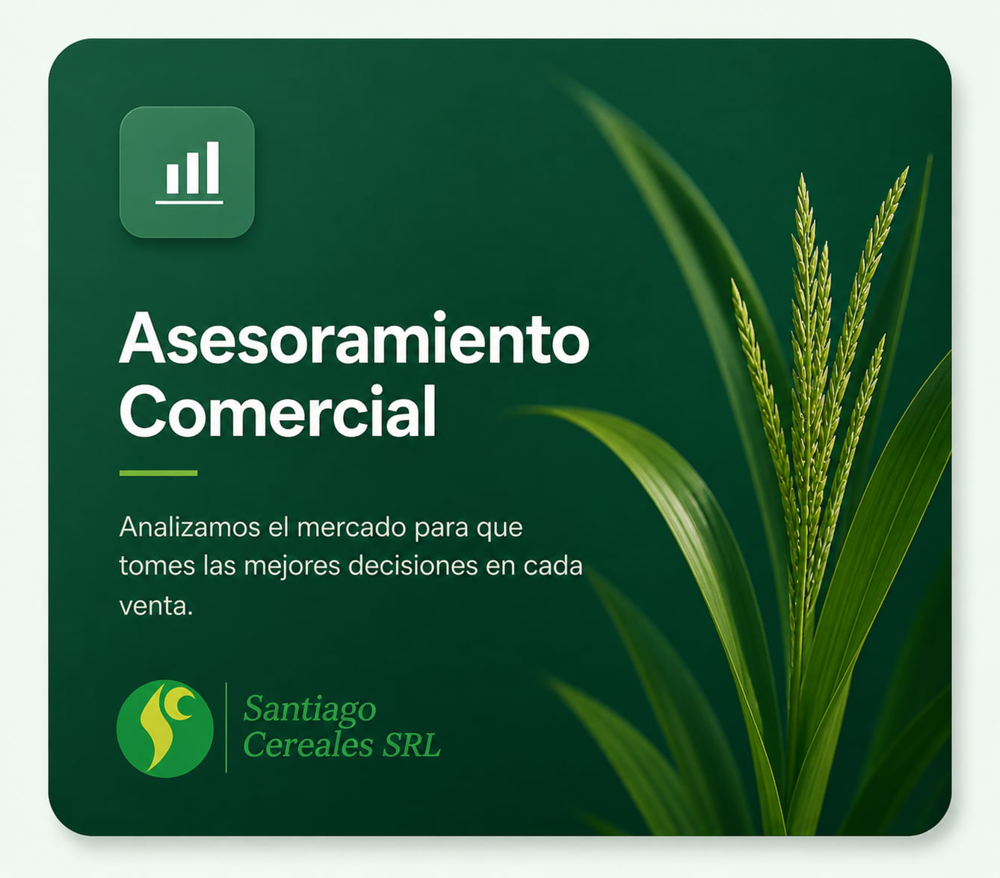

Logística y Almacenaje
Eficiencia garantizada en el transporte y cuidado de su producción con tecnología de punta.

25 AÑOS DE TRAYECTORIA
Desde la semilla hasta la comercialización, brindamos soluciones integrales con el respaldo de 25 años de trayectoria en el campo argentino.
NUESTRA COMUNIDAD
Descubrí el día a día de la producción agrícola argentina. Compartimos la pasión por el campo, la tecnología en maquinaria y los paisajes de nuestra tierra.
Eficiencia garantizada en el transporte y cuidado de su producción con tecnología de punta.

Analizamos el mercado para que tomes las mejores decisiones en cada venta.
Saber Más